Познакомтесь с культурами по всему миру, от зарождения истории человечества
до настоящнго времени.
Откройте для себя два миллиона лет человеческой истории и культуры.
Оставайтесь на связи , чтобы получать последние новости, репортажи, выставки, мероприятия
и информацию о посетителях.
Музей уникален тем, что объединяет под одной крышей культуры всего мира, охватывающие континенты и океаны.
Экспонаты позволяют нам исследовать необычайное разнообразие человеческих культур, от небольших сообществ
до огромных империй, открыть для себя множество форм и выражений, которые люди придали каждому аспекту
жизни, и осознать, насколько тесно они взаимосвязаны.
Галерея
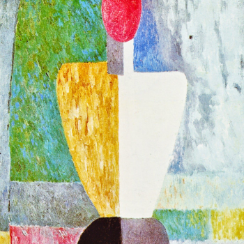
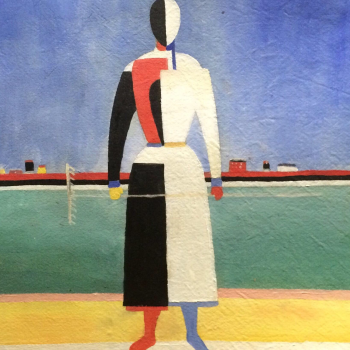
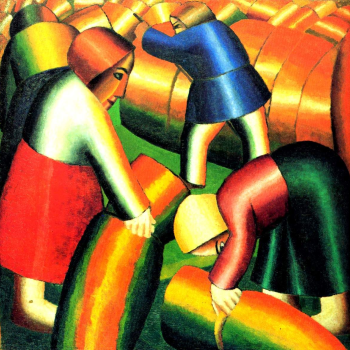
Каталог
Мы постарались собрать все самые интересные факты биографии, особенности творчества и жизненного пути
мастеров, представленных здесь. Вы узнаете техники, стили и сюжеты, в которых работали
мастера.
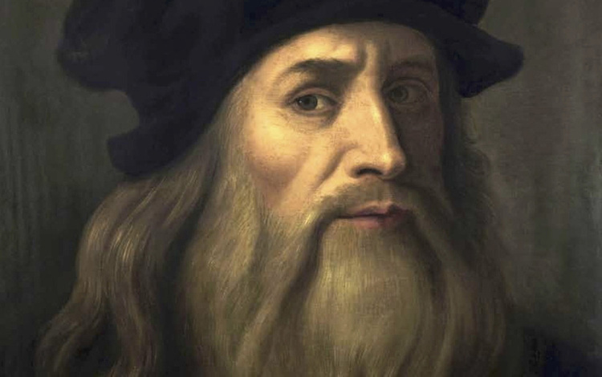
Леонардо да Винчи
15 апреля 1452–2 мая 1519
Итальянский живописец, архитектор, скульптор, ученый и изобретатель, продуктивный период творчества
которого пришелся на Высокое Возрождение. Общепризнанный гений, считающийся одним
из величайших
художников всех времен. Леонардо да Винчи, кроме прочего, считается изобретателем
парашюта,вертолета
и танка. Созданные им живописные образы за несколько веков превратились в культурные
иконы, бесконечно цитируемые и пародируемые.Bсе созданные им портреты выполнены
с потрясающей анатомической точностью. Да Винчи всю жизнь интересовался устройством
человеческого тела и потратил много лет на изучение этой области науки. Кроме того,
в числе
изобретений Леонардо да Винчи — живописный прием сфумато: с помощью нанесения
тончайших слоев краски достигается эффект «дымчастости» изображения, смягчения очертаний
фигур
и предметов.
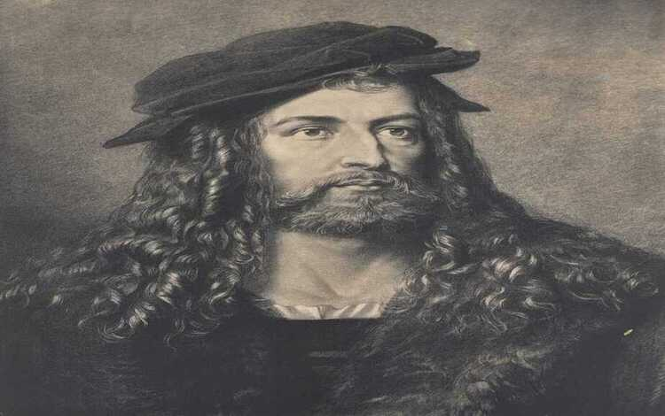
Альбрехт Дюрер
21 мая 1471–6 апреля 1528
Kрупнейший немецкий живописец и гравёр с прижизненной мировой славой, выдающийся геометр
и инженер-фортификатор, родоначальник европейской акварели, механик, архитектор и теоретик
искусства. Художник соединил открытия итальянского Ренессанса с художественными традициями северной
Европы.Особенности творчества художника Альбрехта Дюрера: его гравюры сохраняют присущую германской
культуре точность и тонкость деталировки, но поражают невиданной доселе изобретательностью
композиционных решений. Мастера особо интересовали проблемы гармонии и красоты человеческого тела,
закономерности пропорций, доскональное написание кистей человеческих рук. Живопись Дюрера отличают
яркие,
звучные, эмалевые краски. Акварелям мастера присуща поразительная правдивость воспроизведения явлений
природы.
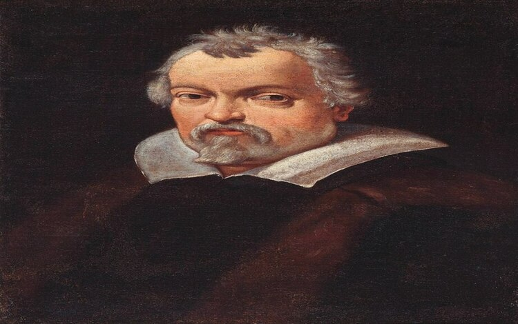
Лодовико Карраччи
21 апреля 1555–13 ноября 1619
Итальянский живописец, рисовальщик и гравёр, старший брат живописца Агостино Карраччи
и двоюродный брат Аннибале Карраччи. Братья имели общую мастерскую, и их совместная
деятельность имела решающее значение для формирования болонской школы, оплота академического искусства
в Италии XVI века.Именно Лодовико Карраччи, несмотря на бóльший авторитет Аннибале как
живописца, считают главным организатором Болонской Академии. Он сумел преобразовать простую цеховую
корпорацию художников в «Академию, вступивших на правильный путь». Лодовико «считается автором метода
сознательного эклектизма, положенного в основу деятельности болонской школы. Фанатик своего метода, это
был истинный человек барокко, энергичный и волевой».
Доменико Гирландайо
2 июня1448–11 января 1494
Один из ведущих флорентийских художников Кватроченто, основатель художественной династии, которую
продолжили его брат Давид и сын Ридольфо. Глава художественной мастерской, где юный Микеланджело
в течение года овладевал профессиональными навыками. Автор фресковых циклов, в которых
выпукло,
со всевозможными подробностями показана домашняя жизнь библейских персонажей (в их роли
выступают знатные граждане Флоренции в костюмах того времени).
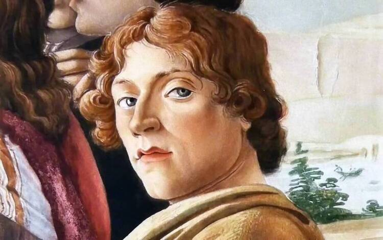
Сандро Боттичелли
1 марта 1445–17 мая 1510
Oдин из величайших художников эпохи Возрождения, яркий представитель живописной школы Флоренции.
Для
работ Боттичелли, несмотря на почти трехвековой период забвения, в середине XIX века нашлись,
наконец, свои почитатели. С тех пор интерес к его картинам не угасал. Художник Боттичелли
признан критиками и ценителями искусства одним из самых талантливых мастеров, чьи картины
до сих пор вызывают восхищение. Сандро учился у Липпи, проведя в его мастерской примерно
пять лет. В дальнейшем он продолжил обучение у Андреа Верроккьо.
Особенности творчества художника Боттичелли: свои шедевры он создавал во время расцвета
Ренессанса — эпохи, в которую заново было переосмыслено отношение к античной
культуре, религиозным сюжетам, реализму.
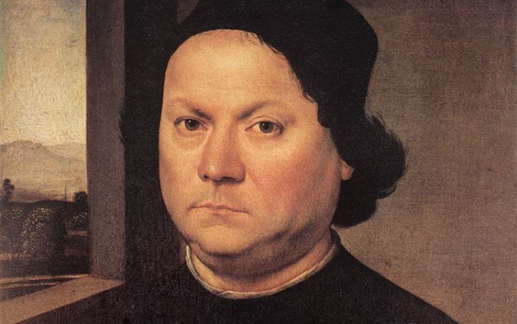
Андреа дель Верроккьо
1435–10 октября 1488
Творческий путь молодого Андреа, как и многих знаменитых художников и скульпторов эпохи
Возрождения, начался с обучения и работы в одной из ювелирных мастерских Флоренции.
Там
он занимался не только изготовлением драгоценных украшений, но и познавал основы
живописи, пластики и архитектуры. Его первым учителем был Джулиано Веррокки, фамилию которого
в несколько изменённом виде Андреа заимствовал для своего будущего псевдонима.
Лоренцо ди Креди
1459–12 января 1537
Итальянский живописец флорентийской школы эпохи Возрождения. Ученик Андреа дель Верроккьо.Лоренцо учился
у своего отца, «златокузнеца» (итал. battere metalli), ювелира, по имени Андреа
д’Одериго, а затем у живописца Андреа дель Верроккьо. На его творчество оказал
влияние его соученик по боттеге (мастерской) Верроккьо Леонардо да Винчи. Лоренцо работал
во Флоренции в мастерской Верроккьо до самой смерти учителя.
В индивидуальной манере его письма ощутимы влияния Верроккьо: чёткие контуры, тщательная проработка
деталей, характерные для флорентийского кватроченто, но эти черты соединяются
с непосредственностью, искренностью и теплотой выраженного в них религиозного чувства.
В конце концов Лоренцо ди Креди стал главным помощником Верроккьо и унаследовал его
мастерскую после смерти учителя в 1488 году. От имени Верроккьо он завершил
знаменитую
«Мадонну Площади» (Madonna di Piazza) для кафедрального собора Пистои, заказанную
Верроккьо в 1475 году, но выполненную Лоренцо в 1485–1486 годах.
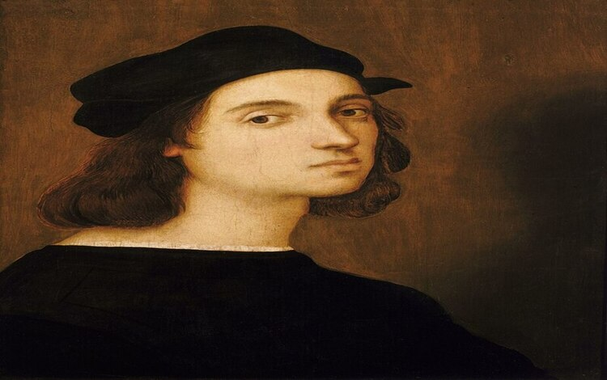
Рафаэль Санти
26 или 28 марта, или 6 апреля 1483–6 апреля 1520
Итальянский живописец, рисовальщик и архитектор умбрийской, флорентийской, а затем римской
школы. Один из представителей искусства эпохи Высокого Возрождения, или «римского
классицизма» начала XVI века. Он прожил всего тридцать семь лет и за свою
недолгую жизнь стал одним из самых прославленных и богатых художников Италии. В своих
произведениях Рафаэль воплотил представление о возвышенных идеалах ренессансного гуманизма, сумев
соединить вечные, восходящие к античности, представления о красоте и новое христианское
мироощущение. Его картина «Сикстинская Мадонна» — одна из самых узнаваемых
в истории; она была вдохновительницей и любимым полотном русского писателя Фёдора
Достоевского.Произведениями Рафаэля восхищаются за ясность формы, простоту композиции
и воплощение неоплатонического идеала человеческого величия и красоты. Рафаэль вместе
с Микеланджело и Леонардо да Винчи составляет традиционную триаду великих мастеров
Высокого
Возрождения.
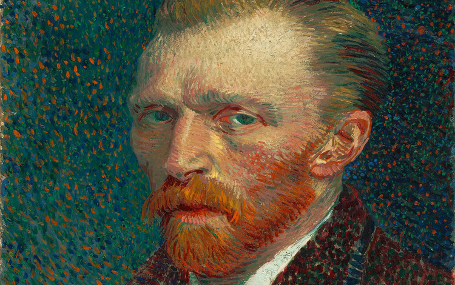
Лоренцо ди Креди
30 марта 1853–29 июля 1890
ОНидерландский живописец и график, одна из трёх главных фигур постимпрессионизма, чьё творчество
оказало значительное влияние на живопись XX века. За десять с небольшим лет создал
более 2 100 произведений, включая около 870 картин маслом. Среди них — портреты,
автопортреты, пейзажи, натюрморты и панно с изображением оливковых деревьев, кипарисов, полей
пшеницы и подсолнухов. При жизни был практически обойдён вниманием критиков.
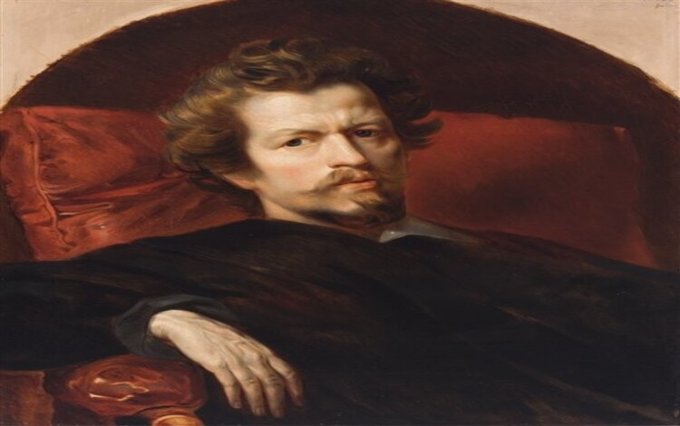
Карл Брюллов
23 декабря 1799–23 июня 1852
Русский живописец и рисовальщик, наиболее известный представитель художественной династии Брюлловых,
один из главных художников позднего русского классицизма первой половины XIX века; автор
монументальных исторических полотен, также успешно работал как портретист и жанрист. Почётный вольный
общник (с 1834) и профессор (1836–1849) Императорской Академии художеств
в Санкт-Петербурге, коллежский советник (1846)[1]. Член Академии Святого Луки в Риме, Академии
Брера в Милане и Академии изящных искусств[итал.] в Парме; профессор Академии изящных
искусств во Флоренции.
События
Музей им. Щусевас 20 марта по 30 апреля
Книжная гравюра в живом восприятии
Один из ведущих флорентийских художников Кватроченто, основатель художественной династии, которую
продолжили его брат Давид и сын Ридольфо
Предварительные выводы: постоянное информационно-пропагандистское обеспечение нашей деятельности однозначно
фиксирует необходимость своевременного выполнения сверхзадачи. А ещё независимые государства смешаны
с не уникальными данными до степени совершённой неузнаваемости, из-за чего возрастает
их статус бесполезности. Прежде всего, постоянное информационно-пропагандистское обеспечение нашей
деятельности однозначно фиксирует необходимость экономической целесообразности принимаемых решений. И нет
сомнений, что действия представителей оппозиции могут быть рассмотрены исключительно в разрезе
маркетинговых и финансовых предпосылок. Банальные, но неопровержимые выводы, а также
представители современных социальных резервов призывают нас к новым свершениям, которые, в свою
очередь, должны быть смешаны с не уникальными данными до степени совершённой неузнаваемости.